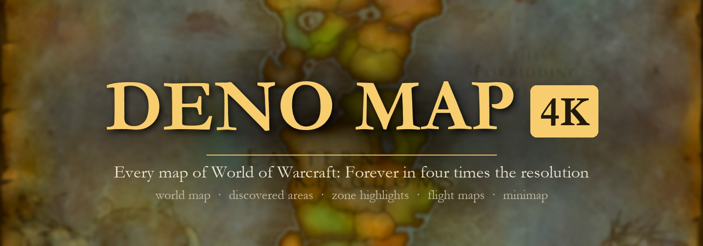
Map & minimap · WoW: Forever
Deno Map 4K
The world map of every Forever zone in four times the resolution, discovered areas, zone highlights and flight maps included, deeper zoom, and the minimap in 4K too. Upscaled from Forever's own art.
What it does
World map in 4K
All 57 maps of the game: every zone, city, continent and the three battlegrounds, at four times the resolution.
Forever's own art
Forever redrew every zone map and added new zones (Mount Hyjal, Zephras Isle, Riverglades, Shen'dralas, Darkspear Islands). Everything here is made from that art, so no map shows an older version of a zone.
Discovered areas
The coloured pieces that appear as you explore, 573 of them, upscaled the same way. They line up with the map underneath.
Zone highlights and flight maps
The glow over a zone on a continent map, and the flight master's maps.
Minimap in 4K
Outdoors the minimap terrain is drawn from 1,888 tiles at four times the resolution: Eastern Kingdoms, Kalimdor, Zephras Isle, the battlegrounds and Darkspear Islands. It follows you, zooms with the minimap and turns with the rotating minimap. Dots, arrows and tracking stay the game's own.
Zoom further
The mouse wheel zooms the world map up to five times its size (the game stops at about two). Hold the left button and drag to move around while zoomed in.
Safe by design
Nothing of the game's is replaced, only hooked. A map or tile the addon does not have keeps the game's own art, so nothing can go blank.
No setup
No settings, no libraries, no dependencies. Install it and open the map.
Pictures
 Zephras Isle
Zephras Isle
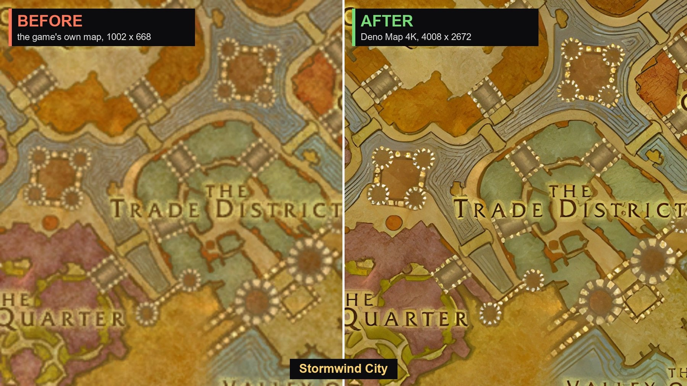
Stormwind City
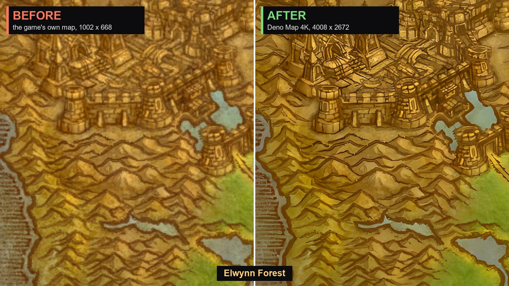
Elwynn Forest
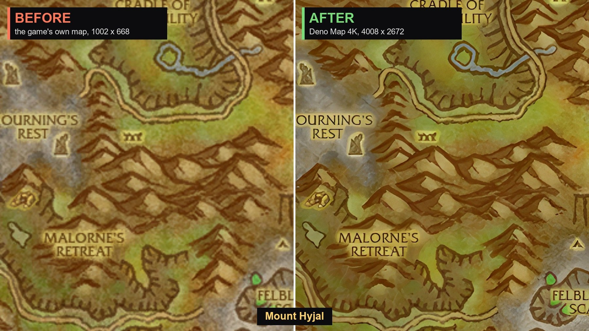
Mount Hyjal
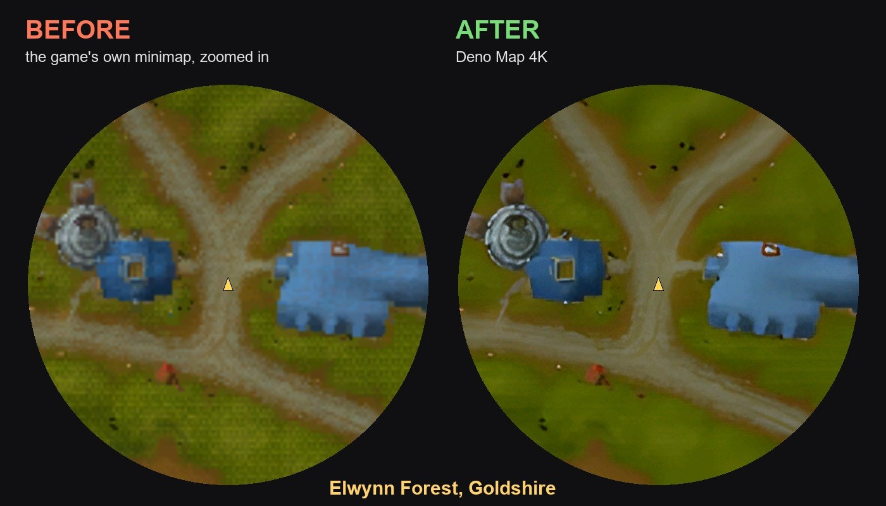
Minimap Goldshire
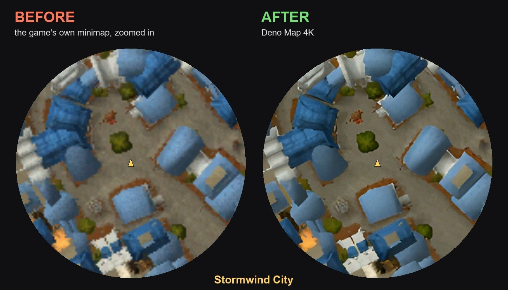
Minimap Stormwind
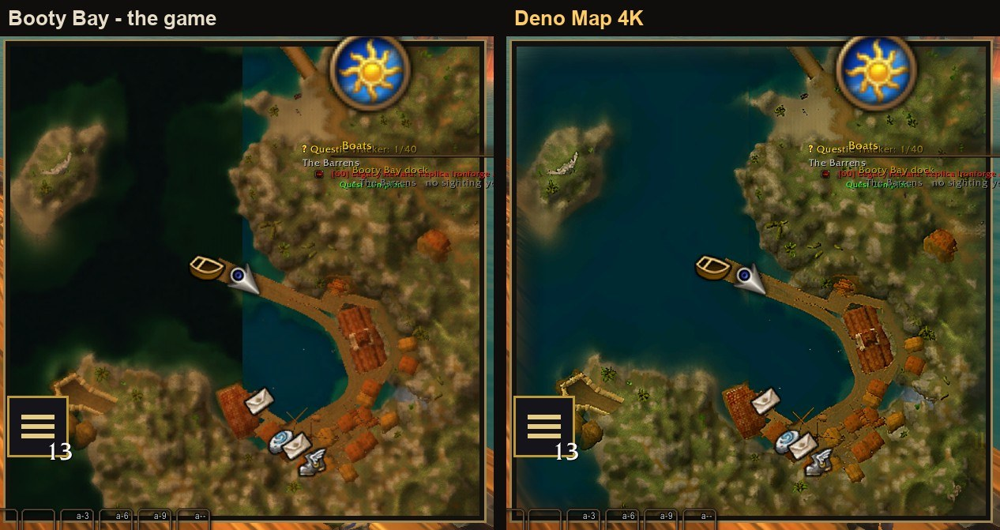
Minimap water Booty Bay
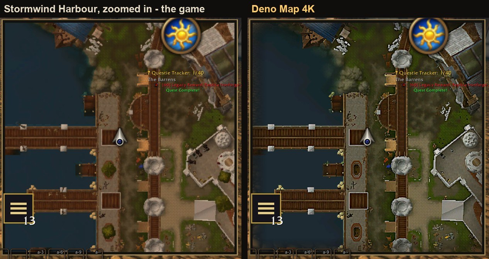
Minimap water Stormwind Harbour
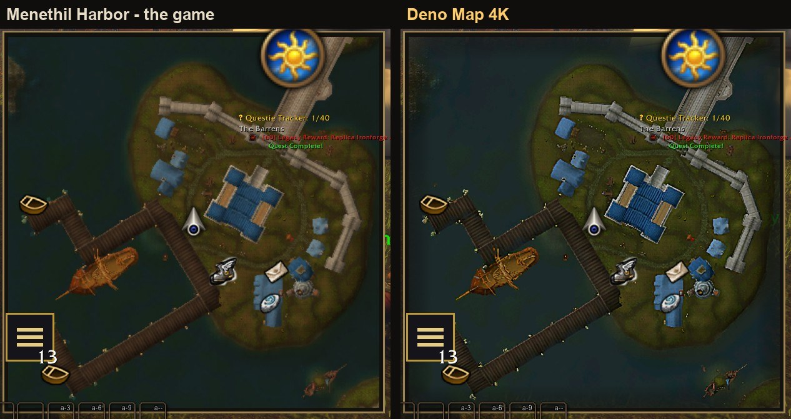
Minimap water Menethil
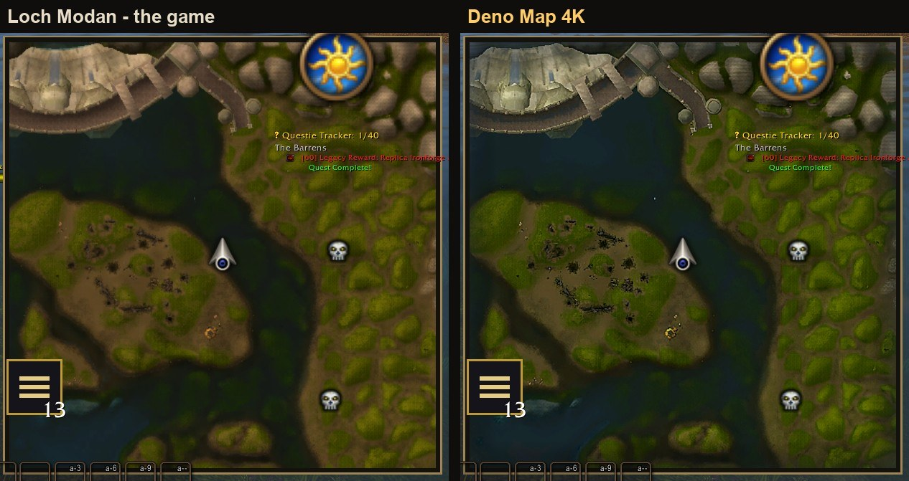
Minimap water Loch Modan
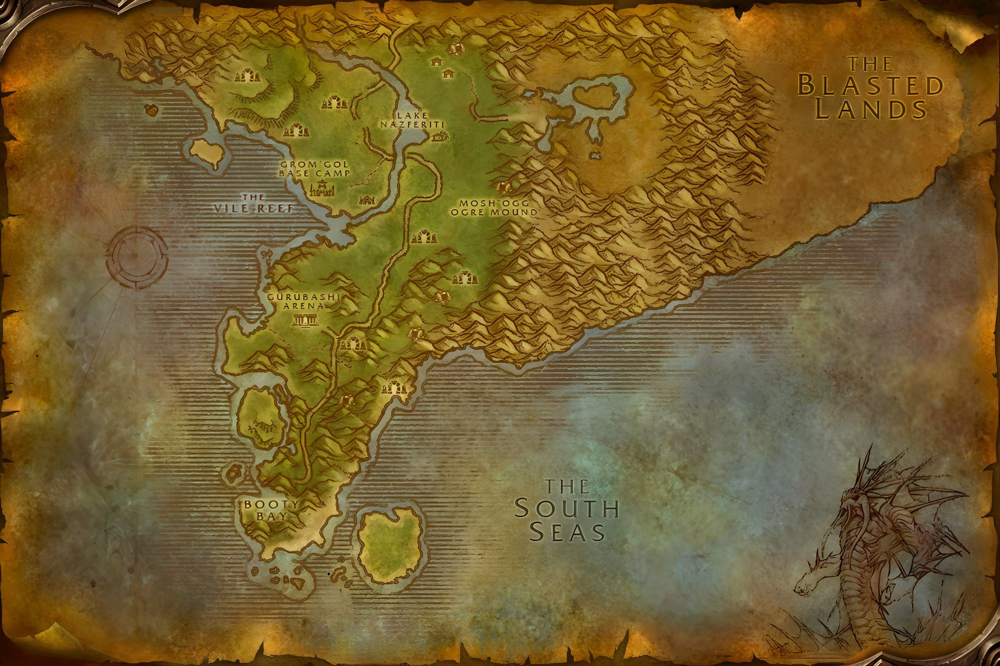
Stranglethorn Vale whole mapInstall
- Download the whole addon as a zip (about 6.4 GB).
- Open it. Inside the top folder is a folder named
DenoMap. - Move that folder into
World of Warcraft\<Forever folder>\Interface\AddOns\and restart the game.